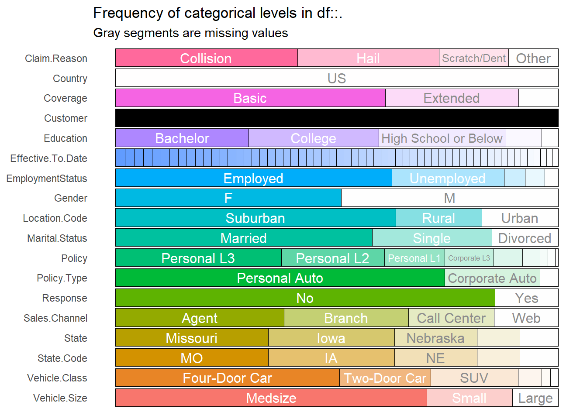
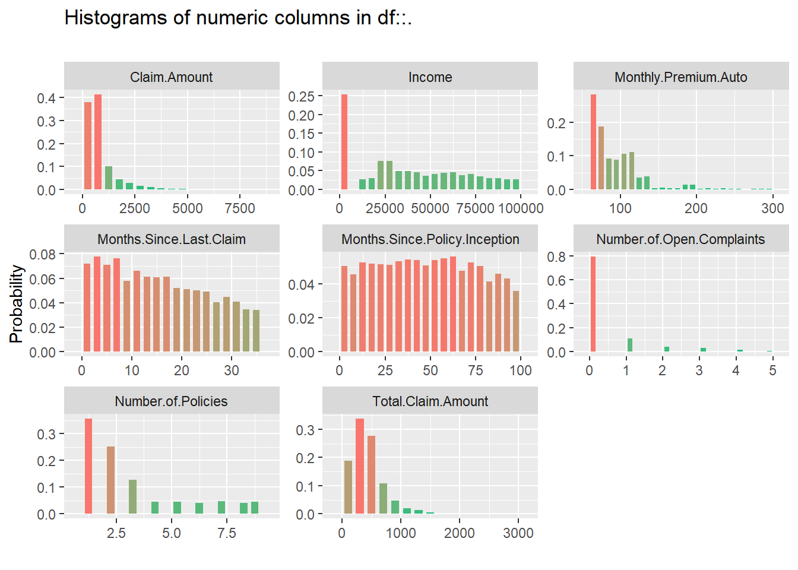
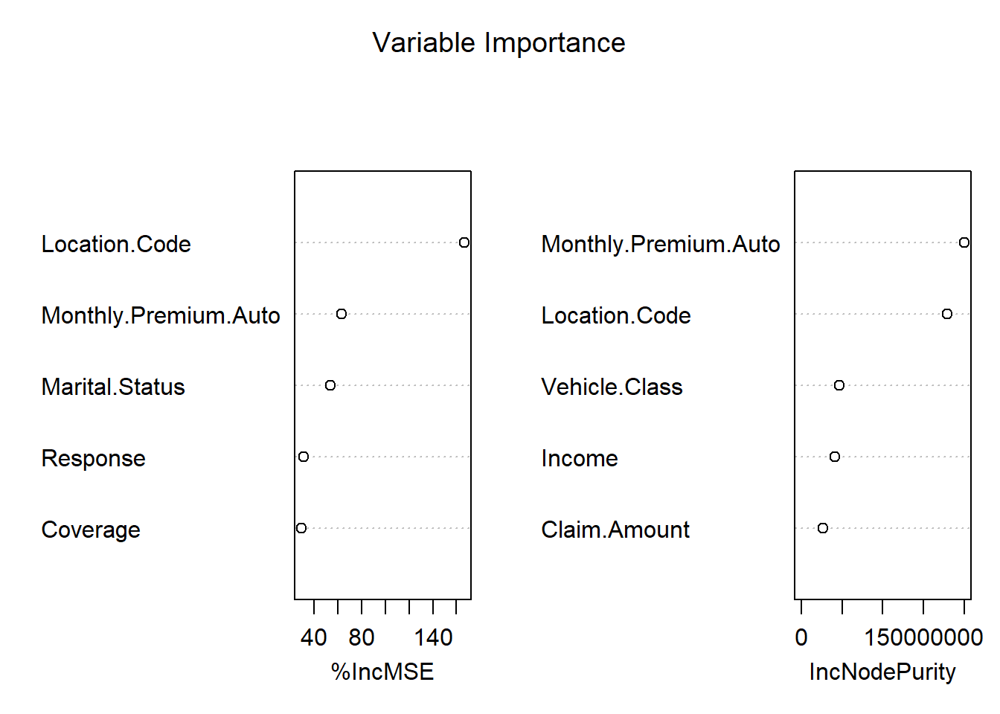
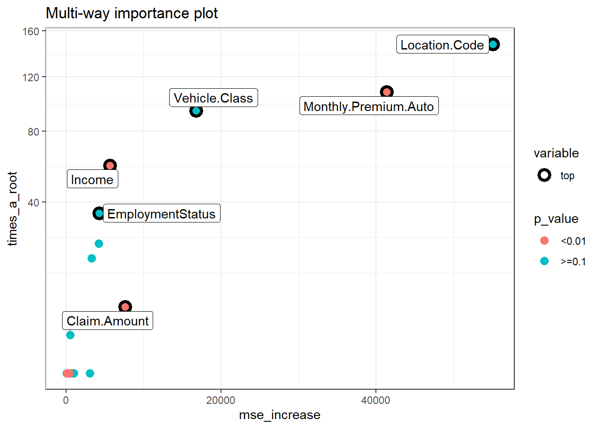

Chapter 5 Insurance
5.1 Prediction of Total Claim Amount
5.1.1 Background
Seiring tingkat kompetisi yang semakin tinggi di industri asuransi, perusahaan dituntut untuk selalu memberikan terobosan dan strategi untuk memberikan layanan yang terbaik untuk nasabahnya. Salah satu aset utama perusahaan asuransi tentunya adalah data nasabah dan riwayat polis. Tentunya dengan adanya data yang dimiliki oleh perusahaan, dapat dimanfaatkan dalam upaya pengambilan keputusan strategis.
Perusahaan memiliki kebutuhan untuk memperhitungkan pembayaran klaim di masa depan. Tanggung jawab tersebut biasa dikenal sebagai cadangan klaim. Karena cadangkan klaim adalah kewajiban yang harus dipersiapkan untuk masa yang akan datang, nilai pastinya tidak diketahui dan harus diperkirakan.
Risiko yang dimiliki oleh setiap nasabah tentunya bervariasi, faktor-faktor yang berhubungan dengan risiko tentunya membantu dalam memprediksi biaya klaim yang harus dibayarkan. Tujuan dari analysis ini adalah untuk memprediksi besarnya klaim yang harus diberikan oleh perusahaan untuk setiap nasabahnya, hasil prediksi diperoleh dengan mempelajari karakteristik dan profil dari nasabah tersebut.
5.1.2 Modelling Analysis
5.1.2.1 Import Data
Data yang digunakan merupakan profil data nasabah asuransi kendaraan beserta total claim dari masing-masing nasabah yang diperoleh dari link berikut. Data tersebut berisikan 9134 observasi atau sebanyak jumlah nasabah yang dimiliki, beserta 26 kolom. Target variabel pada data ini adalah Total.Claim.Amount, kita akan memprediksi total claim amount untuk setiap nasabah, harapannya perusahaan asuransi dapat mengetahui dana yang harus disiapkan untuk membayar klaim.
insurance <- read.csv("assets/04-insurance/Auto_Insurance_Claims_Sample.csv")
head(insurance)#> Customer Country State.Code State Claim.Amount Response Coverage Education
#> 1 BU79786 US KS Kansas 276.3519 No Basic Bachelor
#> 2 QZ44356 US NE Nebraska 697.9536 No Extended Bachelor
#> 3 AI49188 US OK Oklahoma 1288.7432 No Premium Bachelor
#> 4 WW63253 US MO Missouri 764.5862 No Basic Bachelor
#> 5 HB64268 US KS Kansas 281.3693 No Basic Bachelor
#> 6 OC83172 US IA Iowa 825.6298 Yes Basic Bachelor
#> Effective.To.Date EmploymentStatus Gender Income Location.Code Marital.Status
#> 1 2/24/11 Employed F 56274 Suburban Married
#> 2 1/31/11 Unemployed F 0 Suburban Single
#> 3 2/19/11 Employed F 48767 Suburban Married
#> 4 1/20/11 Unemployed M 0 Suburban Married
#> 5 2/3/11 Employed M 43836 Rural Single
#> 6 1/25/11 Employed F 62902 Rural Married
#> Monthly.Premium.Auto Months.Since.Last.Claim Months.Since.Policy.Inception
#> 1 69 32 5
#> 2 94 13 42
#> 3 108 18 38
#> 4 106 18 65
#> 5 73 12 44
#> 6 69 14 94
#> Number.of.Open.Complaints Number.of.Policies Policy.Type Policy
#> 1 0 1 Corporate Auto Corporate L3
#> 2 0 8 Personal Auto Personal L3
#> 3 0 2 Personal Auto Personal L3
#> 4 0 7 Corporate Auto Corporate L2
#> 5 0 1 Personal Auto Personal L1
#> 6 0 2 Personal Auto Personal L3
#> Claim.Reason Sales.Channel Total.Claim.Amount Vehicle.Class Vehicle.Size
#> 1 Collision Agent 384.8111 Two-Door Car Medsize
#> 2 Scratch/Dent Agent 1131.4649 Four-Door Car Medsize
#> 3 Collision Agent 566.4722 Two-Door Car Medsize
#> 4 Collision Call Center 529.8813 SUV Medsize
#> 5 Collision Agent 138.1309 Four-Door Car Medsize
#> 6 Hail Web 159.3830 Two-Door Car Medsize5.1.2.2 Exploratory Data
Selanjutnya melihat structure data dari masing-masing variabel, jika terdapat variabel yang belum sesuai tipe datanya perlu dilakukan explicit coercion.
str(insurance)#> 'data.frame': 9134 obs. of 26 variables:
#> $ Customer : chr "BU79786" "QZ44356" "AI49188" "WW63253" ...
#> $ Country : chr "US" "US" "US" "US" ...
#> $ State.Code : chr "KS" "NE" "OK" "MO" ...
#> $ State : chr "Kansas" "Nebraska" "Oklahoma" "Missouri" ...
#> $ Claim.Amount : num 276 698 1289 765 281 ...
#> $ Response : chr "No" "No" "No" "No" ...
#> $ Coverage : chr "Basic" "Extended" "Premium" "Basic" ...
#> $ Education : chr "Bachelor" "Bachelor" "Bachelor" "Bachelor" ...
#> $ Effective.To.Date : chr "2/24/11" "1/31/11" "2/19/11" "1/20/11" ...
#> $ EmploymentStatus : chr "Employed" "Unemployed" "Employed" "Unemployed" ...
#> $ Gender : chr "F" "F" "F" "M" ...
#> $ Income : int 56274 0 48767 0 43836 62902 55350 0 14072 28812 ...
#> $ Location.Code : chr "Suburban" "Suburban" "Suburban" "Suburban" ...
#> $ Marital.Status : chr "Married" "Single" "Married" "Married" ...
#> $ Monthly.Premium.Auto : int 69 94 108 106 73 69 67 101 71 93 ...
#> $ Months.Since.Last.Claim : int 32 13 18 18 12 14 0 0 13 17 ...
#> $ Months.Since.Policy.Inception: int 5 42 38 65 44 94 13 68 3 7 ...
#> $ Number.of.Open.Complaints : int 0 0 0 0 0 0 0 0 0 0 ...
#> $ Number.of.Policies : int 1 8 2 7 1 2 9 4 2 8 ...
#> $ Policy.Type : chr "Corporate Auto" "Personal Auto" "Personal Auto" "Corporate Auto" ...
#> $ Policy : chr "Corporate L3" "Personal L3" "Personal L3" "Corporate L2" ...
#> $ Claim.Reason : chr "Collision" "Scratch/Dent" "Collision" "Collision" ...
#> $ Sales.Channel : chr "Agent" "Agent" "Agent" "Call Center" ...
#> $ Total.Claim.Amount : num 385 1131 566 530 138 ...
#> $ Vehicle.Class : chr "Two-Door Car" "Four-Door Car" "Two-Door Car" "SUV" ...
#> $ Vehicle.Size : chr "Medsize" "Medsize" "Medsize" "Medsize" ...Berikutnya kita perlu inspect persebaran data yang dimilih baik data kategorik dan numerik, kita dapat menggunakan package inspectdf untuk eksplorasi berikut ini.
insurance %>% inspect_cat() %>% show_plot()
insurance %>% inspect_num() %>% show_plot()
Dari hasil kedua plot diatas berikutnya membuang variabel yang tidak dibutuhkan dalam model. Variabel customer merupakan data unique dari ID setiap customer, oleh karena itu kita akan membuang variabel tersebut. Variabel country tidak banyak memberikan informasi, karena semua observasi berisikan informasi yang sama. Variabel State.Code juga memberikan informasi yang sama dengan variabel State, oleh karena itu kita akan menggunakan salah satu dari kedua variabel tersebut yaitu variabel State. Sedangkan untuk variabel Policy kita hilangkan karena informasi yang diberikan juga sama dengan variabel Policy.Type.
insurance <- insurance %>%
select(-c(Customer, Country, State.Code,
Effective.To.Date, Policy))Selanjutnya, split data menjadi data train dan data test dengan proporsi 80:20.
set.seed(100)
idx <- initial_split(data = insurance,prop = 0.8)
claim_train <- training(idx)
claim_test <- testing(idx)5.1.2.3 Modelling
Kemudian bentuk model random forest, tentukan target variabel dan prediktor yang digunakan.
library(randomForest)
forest_claim <- randomForest(Total.Claim.Amount~.,data = claim_train, localImp = TRUE)
#saveRDS(forest_claim,"forest_claim.RDS")forest_claim <- readRDS("assets/04-insurance/forest_claim.RDS")
forest_claim#>
#> Call:
#> randomForest(formula = Total.Claim.Amount ~ ., data = claim_train, localImp = TRUE)
#> Type of random forest: regression
#> Number of trees: 500
#> No. of variables tried at each split: 6
#>
#> Mean of squared residuals: 13616.34
#> % Var explained: 84.36Model memiliki kemampuan menjelaskan variasi data sebesar 84.8%, sedangkan sisanya sebesar 15.2% dijelaskan oleh variabel lain yang tidak digunakan pada model. Untuk mengetahui variabel yang paling berpengaruh pada model, kita dapat melihat variabel importance.
varImpPlot(forest_claim, main = "Variable Importance",n.var = 5)
Nilai importance atau tingkat kepentingannya terdapat dua penilaian yaitu IncMSE dan IncNodePurity. Untuk IncMSE diperoleh dari error pada OOB (out of bag) data, kemudian di rata-ratakan untuk semua pohon, dan dinormalisasi dengan standar deviasi. Untuk IncNodePurity merupakan total penurunan impurity dari masing-masing variabel. Untuk kasus klasifikasi node impurity diperoleh dari nilai gini index, sedangkan untuk kasus regresi diperoleh dari SSE (Sum Square Error).
Untuk mengetahui peran variabel dalam pembuatan model, kita dapat memanfaatkan package randomForestExplainer yang menyediakan beberapa function untuk memperoleh informasi mengenai variabel importance.
mindepth_frame <- min_depth_distribution(forest_claim)
#saveRDS(mindepth_frame, "mindepthframe.rds")mindepth_frame <- readRDS("assets/04-insurance/mindepthframe.rds")
plot_min_depth_distribution(mindepth_frame, mean_sample = "top_trees")
Plot tersebut memberikan informasi mengenai nilai mean minimal dept untuk setiap variabel. Semakin kecil nilai minimal depth artinya semakin penting variabel tersebut pada model. Semakin besar proporsi minimal dept pada warna merah mudah (mendekati 0), artinya variabel tersebut sering dijadikan sebagai root node, yaitu variabel utama yang digunakan untuk menentukan nilai target.
imp_frame <- measure_importance(forest_claim)
#saveRDS(imp_frame,"imp_frame.rds")imp_frame <- readRDS("assets/04-insurance/imp_frame.rds")
plot_multi_way_importance(imp_frame, size_measure = "no_of_nodes",no_of_labels = 6)
plot_multi_way_importance(imp_frame, x_measure = "mse_increase",
size_measure = "p_value", no_of_labels = 6)
Perbandingan dari ketiga plot, terdapat 5 variabel yaitu location code, monthly premium auto, vehicle class, income, dan claim amount yang selalu muncul dari ketiga plot tersebut. Artinya kelima variabel tersebut dapat dikatakan variabel yang paling berpengaruh dan banyak digunakan dalam pembuatan pohon.
Berikutnya lakukan prediksi untuk data test, kemudian cari nilai error dari hasil prediksi
claim_test$pred <- predict(object = forest_claim,newdata = claim_test)Mencari nilai RMSE (Root Mean Squared Error)
MLmetrics::RMSE(y_pred = claim_test$pred,y_true = claim_test$Total.Claim.Amount)#> [1] 106.1973RMSE merupakan nilai rata rata dari jumlah kuadrat error yang menyatakan ukuran besarnya kesalahan yang dihasilkan oleh model. Nilai RMSE rendah menunjukkan bahwa variasi nilai yang dihasilkan oleh model mendekasi variasi nilai observasinya. Jika dilihat dari 5 number summary variabel total claim amount, nilai RMSE yang diperoleh sebesar 119.9 dapat dikatakan sudah cukup baik.
5.1.3 Conclusion
Untuk memprediksi nilai Total Claim Amount model ini memiliki kemampuan menjelaskan variasi data sebesar 84.8% dan variabel yang paling mempengaruhi target adalah variabel location code, monthly premium auto, vehicle class, income, dan claim amount. Hasil error yang diperoleh dari model tersebut cukup baik dalam memprediksi data.